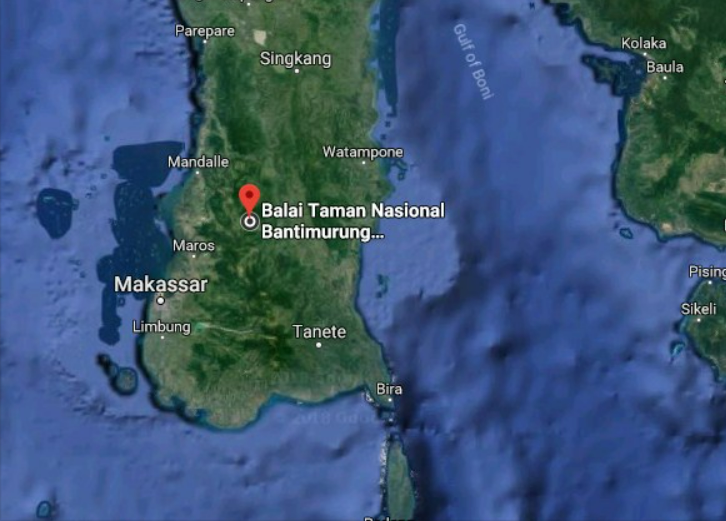

Wisata Taman Nasional Bantimurung Bulusaraung di Maros Sulawesi Selatan
By Mifta Reski
Posted on January 26, 2023Informasi Umum
Wisata Taman Nasional Bantimurung-Bulusaraung di Maros Sulawesi Selatan adalah salah satu tempat wisata yang berada di sulawesi selatan Obyek Wisata Wisata Taman Nasional Bantimurung-Bulusaraung di Maros Sulawesi Selatan adalah tempat wisata yang ramai dengan wisatawan pada hari biasa maupun hari liburan. Tempat ini sangat indah dan bisa memberikan sensasi yang berbeda dengan aktivitas kita sehari hari.
Wisata Taman Nasional Bantimurung-Bulusaraung di Maros Sulawesi Selatan memiliki pesona keindahan yang sangat menarik untuk dikunjungi. Sangat di sayangkan jika anda berada di kota maros tidak mengunjungi wisata air yang mempunyai keindahan yang tiada duanya tersebut.
Wisata Taman Nasional Bantimurung-Bulusaraung di Maros Sulawesi Selatan sangat cocok untuk mengisi kegiatan liburan anda, apalagi saat liburan panjang seperti libur nasional, ataupun hari ibur lainnya. Keindahan Wisata Taman Nasional Bantimurung-Bulusaraung di Maros Sulawesi Selatan ini sangatlah baik bagi anda semua yang berada di dekat atau di kejauhan untuk merapat mengunjungi tempat Wisata Taman Nasional Bantimurung-Bulusaraung di Maros Sulawesi Selatan.
Lokasi
Dimana lokasi Wisata Taman Nasional Bantimurung-Bulusaraung di Maros Sulawesi Selatan? seperti yang tertulis di atas lokasi Wisata Taman Nasional Bantimurung-Bulusaraung di Maros Sulawesi Selatan.berada di sulawesi selatan.
Tetapi jika anda masih bingung di mana lokasi atau letak Wisata Taman Nasional Bantimurung-Bulusaraung di Maros Sulawesi Selatan saya sarankan anda mencari dengan mengetik Wisata Taman Nasional Bantimurung-Bulusaraung di Maros Sulawesi Selatan di search google maps saja. Di Google maps sudah tertandai dimana lokasi yang anda cari tersebut.
Daya Tarik
Wisata Taman Nasional Bantimurung-Bulusaraung di Maros Sulawesi Selatan merupakan tempat wisata yang harus anda kunjungi karena pesona keindahannya tidak ada duanya. Penduduk lokal daerah maros juga sangat ramah tamah terhadap wisatawan lokal maupun wisatawan asing
Kota maros juga terkenal akan keindahan obyek wisatanya , salah satu contohnya adalah Wisata Taman Nasional Bantimurung-Bulusaraung di Maros Sulawesi Selatan ini.Taman Nasional Bantimurung-Bulusaraung memiliki berbagai keunikan, yaitu: karst, goa-goa dengan stalaknit dan stalakmit yang indah, dan yang paling dikenal adalah kupu-kupu. Bantimurung oleh Alfred Russel Wallace dijuluki sebagai The Kingdom of Butterfly (kerajaan kupu-kupu.
Wisata Taman Nasional Bantimurung-Bulusaraung di Maros Sulawesi Selatan ini merupakan salah satu tempat tujuan wisata yang menyuguhkan wisata alam berupa lembah bukit kapur yang curam dengan vegetasi tropis, air terjun, dan gua yang merupakan habitat beragam spesies [termasuk [kupu-kupu]].Wisata Taman Nasional Bantimurung-Bulusaraung di Maros Sulawesi Selatan ini memang menonjolkan kupu-kupu sebagai daya tarik utamanya. Di tempat ini sedikitnya ada 20 jenis kupu-kupu yang dilindungi pemerintah dan ditetapkan melalui Peraturan Pemerintah No. 7/1999.
Beberapa spesies unik bahkan hanya terdapat di Sulawesi Selatan, yaitu Troides Helena Linne, Troides Hypolitus Cramer, Troides Haliphron Boisduval, Papilo Adamantius, dan Cethosia Myrana. Antara tahun 1856-1857, Alfred Russel Wallace menghabiskan sebagian hidupnya di kawasan tersebut untuk meneliti berbagai jenis kupu-kupu. Wallace menyatakan Bantimurung merupakan The Kingdom of Butterfly (kerajaan kupu-kupu).
Menurutnya di lokasi tersebut terdapat sedikitnya 250 spesies kupu-kupu.Lokasi wisata ini juga memeliki dua buah gua yang bisa dimanfaatkan sebagai wisata minat khusus. Kedua gua itu adalah Gua Batu dan Gua Mimpi. Selain di kawasan Bantimurung, Wisata Taman Nasional Bantimurung-Bulusaraung di Maros Sulawesi Selatan memiliki berbagai macam lokasi ekowisata yang menarik. Di sana terdapat lebih dari 80 Gua alam dan Gua prasejarah yang tersebar di kawasan karst Wisata Taman Nasional Bantimurung-Bulusaraung di Maros Sulawesi Selatan.
Fasilitas
Wisata Taman Nasional Bantimurung-Bulusaraung di Maros Sulawesi Selatan bisa dibilang sebuah wisata taman yang memiliki beberapa akan fasilitas dan pelayanan di antaranya sebagai berikut :
- Area Parkir Kendaraan
- Mushola
- Kamar mandi/MCK
- Penginapan
- dan masih banyak lainnya
Transportasi
Bagi wisatawan asal kota maros sudah tidak bingung lagi untuk mendatangi lokasi Wisata Taman Nasional Bantimurung-Bulusaraung di Maros Sulawesi Selatan Akan tetapi bagaimana bagi wisatawan luar kota bahkan luar negeri, tentu mereka bingung dan takut kesasar. Tapi jangan khawatir bagi wisatawan luar kota maros saya mempunyai solusinya agar anda semua tidak kesasar.
Tentunya sarana transportasi apa yang anda pakai untuk berwisata ke Wisata Taman Nasional Bantimurung-Bulusaraung di Maros Sulawesi Selatan dengan memakai kendaraan pribadi seperti : Mobil atau motor pribadi. Anda bisa meminta panduan arah ke Wisata Taman Nasional Bantimurung-Bulusaraung di Maros Sulawesi Selatan di google maps yang terpasang di smartphone anda. Karena memakai kendaraan pribadi akan lebih menyenangkan dari pada memakai kendaraan umum.
Akan tetapi jika anda memakai kendaraan umum seperti : bis umum atau angkutan lainnya juga bukan masalah besar, pasalnya anda bisa berhenti di terminal bus kota atau desa tujuan anda. Setelah itu melanjutkan dengan menggunakan ojek ataupun kendaraan pribadi anda menuju lokasi Wisata Taman Nasional Bantimurung-Bulusaraung di Maros Sulawesi Selatan tersebut.
Saran dan Tips
Saran dan tips sebelum menuju ke tempat Wisata Taman Nasional Bantimurung-Bulusaraung di Maros Sulawesi Selatan,anda perlu mempersiapkan keperluan yang akan butuhkan. Serta beberapa barang tambahan seperti kamera karena anda pasti ingin mengabadikan moment bersama kelurga ataupun teman-teman anda.
Jangan lupa bawa perlengkapan kesehatan (contohnya adalah sabun, tissue basah, sampo, antiseptik). Siapkanlah fisik dan kendaraan anda supaya liburan anda berjalan dengan lancar. Jaga kondisi diri anda dan selalu berhati-hati.
Peta Lokasi
Demikianlah sedikit ulasan mengenai Pesona Keindahan Wisata Taman Nasional Bantimurung-Bulusaraung di Maros Sulawesi Selatan yang dapat saya informasikan di web https://ihategreenjello.com. Semoga bisa menginspirasi anda semua untuk mencoba berwisata ke Wisata Taman Nasional Bantimurung-Bulusaraung di Maros Sulawesi Selatan Sebagai referensi inilah kumpulan wisata wisata terindah di kota maros Semoga informasi yang saya berikan bisa bermanfaat untuk anda semua.